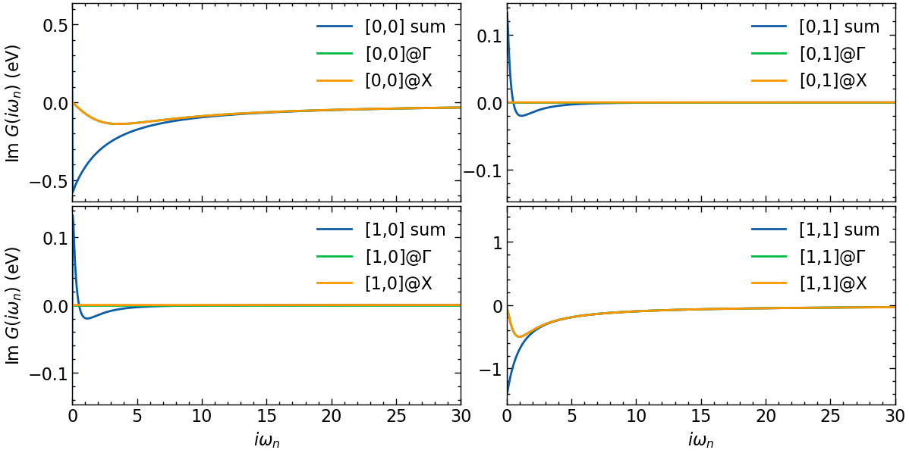
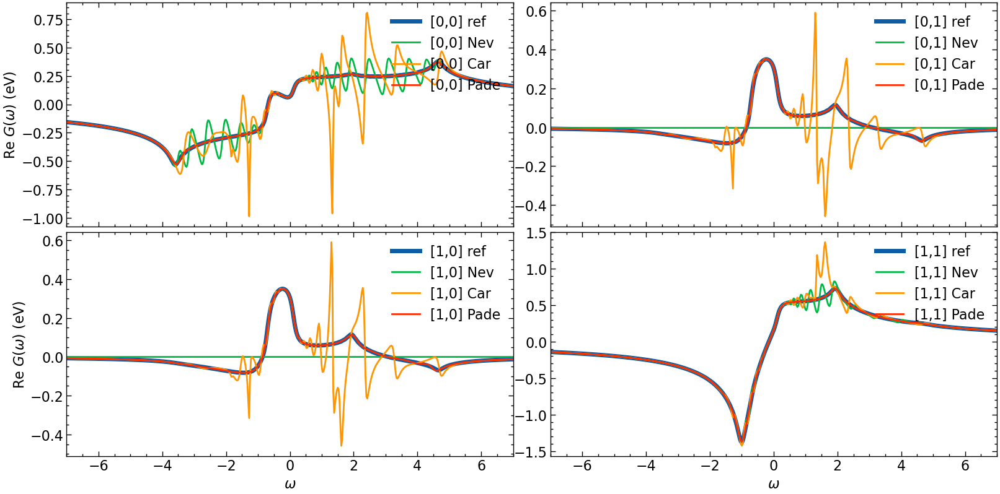

Matrix valued continuation: 2 orbital non interacting 2D Hubbard model
[1]:
import sys, os
import numpy as np
from triqs.plot.mpl_interface import plt,oplot
from h5 import HDFArchive
from triqs.atom_diag import *
from triqs.gf import *
from triqs.operators import c, c_dag, n, dagger
from itertools import product
from triqs.lattice.tight_binding import TBLattice
from triqs.lattice.utils import k_space_path
from triqs_tprf.lattice import lattice_dyson_g0_wk, lattice_dyson_g0_fk
from triqs_Nevanlinna import Solver
from triqs_maxent import *
import seaborn as sns
import scienceplots
plt.style.use(['science','notebook'])
# sns.set_palette('muted')
Warning: could not identify MPI environment!
Starting serial run at: 2023-03-10 17:16:04.929244
Setup simple two orbital 2D Hubbard model on square lattice
[2]:
n_orb = 2
loc = np.zeros((n_orb,n_orb))
for i in range(n_orb):
for j in range(n_orb):
if i != 0 and i==j:
loc[i,j] = 0.2
if j > i or j < i:
loc[i,j] = -0.4
#nearest neighbor hopping
if n_orb == 2:
t = np.array([[-1.,0.1],[0.1,-0.4]])
else:
t = -1.0 * np.eye(n_orb)
tp = 0.1 * np.eye(n_orb) #next nearest neighbor hopping
hop= { (0,0) : loc,
(1,0) : t,
(-1,0) : t,
(0,1) : t,
(0,-1) : t,
(1,1) : tp,
(-1,-1): tp,
(1,-1) : tp,
(-1,1) : tp}
TB = TBLattice(units = [(1, 0, 0) , (0, 1, 0)], hoppings = hop, orbital_positions= [(0., 0., 0.)]*n_orb)
plot dispersion along high-symmetry lines
[3]:
n_pts = 101
G = np.array([ 0.00, 0.00, 0.00])
M = np.array([0.5, 0.5, 0.0])
X = np.array([0.5, 0.0, 0.0])
R = np.array([0.5, 0.5, 0.5])
paths = [(R, G), (G, X), (X, M), (M, G)]
kvecs, k = k_space_path(paths, num=n_pts, bz=TB.bz)
e_mat = TB.fourier(kvecs)
e_val = TB.dispersion(kvecs)
eps_k = {'k': k, 'K': np.concatenate(([0],k[n_pts-1::n_pts])), 'eval': e_val, 'emat' : e_mat}
[4]:
fig, ax = plt.subplots(1,1, figsize=(8,4), dpi=100, squeeze=False)
ax = ax.reshape(-1)
for band in range(eps_k['eval'].shape[1]):
ax[0].plot(eps_k['k'], eps_k['eval'][:,band].real, color='C0', zorder=2.5)
ax[0].axhline(y=0,zorder=2,color='gray',alpha=0.5,ls='--')
ax[0].set_xticks(eps_k['K'])
ax[0].set_xticklabels([r'R', '$\Gamma$', 'X', 'M', r'$\Gamma$'])
ax[0].set_xlim([eps_k['K'].min(), eps_k['K'].max()])
ax[0].set_ylabel(r'$\omega$ (eV)')
plt.show()

Setup lattice Green’s function and calculate \(G_{loc}\) on Matsubara axis
[5]:
k_grid = (100,100,1)
k_mesh = TB.get_kmesh(n_k = k_grid)
e_k = TB.fourier(k_mesh)
eps_k = TB.dispersion(k_mesh)
mu = 0.
beta = 100
n_iw = 1000
iw_mesh = MeshImFreq(beta=beta, S='Fermion', n_max=n_iw)
G0_iwk = lattice_dyson_g0_wk(mu=mu, e_k=e_k, mesh=iw_mesh)
calculate local Green’s function
[6]:
G_Γ_iw = G0_iwk[:, Idx(0,0,0)]
G_X_iw = G0_iwk[:, Idx(k_grid[1]-1,0,0)]
G_loc_iw = Gf(mesh=iw_mesh, target_shape=(n_orb,n_orb))
iw_arr = np.array(list(iw_mesh.values()))
for k in G0_iwk.mesh[1]:
G_loc_iw[:] += G0_iwk[:,k]
G_loc_iw = G_loc_iw / len(k_mesh)
[7]:
fig, ax = plt.subplots(n_orb, n_orb, figsize=(6*n_orb,3*n_orb), dpi=100, squeeze=False,sharex=True)
shp = G_Γ_iw.target_shape
for i in range(n_orb):
for j in range(n_orb):
ax[i,j].oplot(G_loc_iw[i,j].imag, label=f'[{i},{j}] sum')
ax[i,j].oplot(G_Γ_iw[i,j].imag, label=f'[{i},{j}]@$\Gamma$')
ax[i,j].oplot(G_X_iw[i,j].imag, label=f'[{i},{j}]@X')
ax[i,j].set_xlim(0,50)
if i == shp[0]-1:
ax[i,j].set_xlabel(r'$i\omega_n$')
else:
ax[i,j].set_xlabel(r'')
if j == 0:
ax[i,j].set_ylabel(r'Im $G (i\omega_n)$ (eV)')
else:
ax[i,j].set_ylabel(r'')
plt.tight_layout(pad=0.4, w_pad=0.1, h_pad=0.4)
plt.show()

The local Green’s function is off-diagonal in orbital space.
Calculate reference data directly on real frequency axis
[8]:
n_w = 1001
delta = 0.1
w_window = (-7, 7)
w_mesh = MeshReFreq(window=w_window, n_w=n_w)
G0_wk = lattice_dyson_g0_fk(mu=mu, e_k=e_k, mesh=w_mesh, delta=delta)
G_Γ_w = G0_wk[:, Idx(0,0,0)]
G_X_w = G0_wk[:, Idx(k_grid[1]-1,0,0)]
G_loc_w = Gf(mesh=w_mesh, target_shape=(n_orb,n_orb))
w_arr = np.array(list(w_mesh.values()))
for k in G0_wk.mesh[1]:
G_loc_w[:] += G0_wk[:,k]
G_loc_w = G_loc_w / len(k_mesh)
Analytic continuation with Pade, Nevanlinna, and MaxEnt
Pade
[9]:
G_loc_w_P = G_loc_w.copy()
G_loc_w_P.set_from_pade(G_loc_iw, n_points=n_iw, freq_offset=delta)
Nevanlinna & Caratheodory
[10]:
# setup Nevanlinna kernel solver
nevan_mesh = MeshReFreq(window=w_window, n_w=n_w//2)
solver = Solver(kernel="kernels::NEVANLINNA")
solver.solve(G_loc_iw)
G_loc_w_N = solver.evaluate(nevan_mesh, delta)
This is Nevanlinna analytical continuation. All off-diagonal elements will be ignored.
[11]:
# setup matrix valued Nevanlinna kernel solver
solver = Solver(kernel="kernels::CARATHEODORY")
solver.solve(G_loc_iw)
G_loc_w_CN = solver.evaluate(nevan_mesh, delta)
run MaxEnt
[12]:
tm = PoormanMaxEnt(use_hermiticity=True)
tm.set_G_iw(G_loc_iw)
tm.set_error(1.e-5)
tm.omega = HyperbolicOmegaMesh(omega_min=w_window[0], omega_max=w_window[1], n_points=200)
tm.alpha_mesh = LogAlphaMesh(alpha_min=1e-4, alpha_max=1e2, n_points=30)
result = tm.run()
k_diag = tm.maxent_diagonal.K
k_off_diag = tm.maxent_offdiagonal.K
print(result.analyzer_results[0][0]['LineFitAnalyzer']['alpha_index'])
print(result.analyzer_results[0][1]['LineFitAnalyzer']['alpha_index'])
print(result.analyzer_results[1][1]['LineFitAnalyzer']['alpha_index'])
w_mesh_arr = np.linspace(w_mesh.omega_min, w_mesh.omega_max, len(w_mesh))
G_loc_w_ME = np.zeros((n_orb,n_orb,len(w_mesh_arr)))
for i in range(n_orb):
for j in range(n_orb):
G_loc_w_ME[i,j,:] = np.interp(w_mesh_arr, np.array(result.omega), result.get_A_out('LineFitAnalyzer')[i,j])
Calculating diagonal elements.
Calling MaxEnt for element 0 0
2023-03-10 17:19:32.405337
MaxEnt run
TRIQS application maxent
Copyright(C) 2018 Gernot J. Kraberger
Copyright(C) 2018 Simons Foundation
Authors: Gernot J. Kraberger and Manuel Zingl
This program comes with ABSOLUTELY NO WARRANTY.
This is free software, and you are welcome to redistributeit under certain conditions; see file LICENSE.
Please cite this code and the appropriate original papers (see documentation).
Minimal chi2: 0.04768535133605887
scaling alpha by a factor 6001 (number of data points)
alpha[ 0] = 6.00100000e+05, chi2 = 1.68505715e+04, n_iter= 346
alpha[ 1] = 3.72672267e+05, chi2 = 9.36636420e+03, n_iter= 14
alpha[ 2] = 2.31435791e+05, chi2 = 5.17253363e+03, n_iter= 15
alpha[ 3] = 1.43725547e+05, chi2 = 2.85449082e+03, n_iter= 17
alpha[ 4] = 8.92560000e+04, chi2 = 1.57641824e+03, n_iter= 19
alpha[ 5] = 5.54294881e+04, chi2 = 8.66716051e+02, n_iter= 22
alpha[ 6] = 3.44226512e+04, chi2 = 4.72864090e+02, n_iter= 24
alpha[ 7] = 2.13770496e+04, chi2 = 2.57524710e+02, n_iter= 26
alpha[ 8] = 1.32755100e+04, chi2 = 1.41518184e+02, n_iter= 29
alpha[ 9] = 8.24431660e+03, chi2 = 7.89959548e+01, n_iter= 32
alpha[10] = 5.11986028e+03, chi2 = 4.48827884e+01, n_iter= 36
alpha[11] = 3.17951998e+03, chi2 = 2.60389633e+01, n_iter= 42
alpha[12] = 1.97453577e+03, chi2 = 1.54578466e+01, n_iter= 48
alpha[13] = 1.22622017e+03, chi2 = 9.31711860e+00, n_iter= 60
alpha[14] = 7.61503498e+02, chi2 = 5.61319439e+00, n_iter= 74
alpha[15] = 4.72906574e+02, chi2 = 3.34876761e+00, n_iter= 90
alpha[16] = 2.93682994e+02, chi2 = 1.98993105e+00, n_iter= 98
alpha[17] = 1.82382115e+02, chi2 = 1.19430781e+00, n_iter= 113
alpha[18] = 1.13262383e+02, chi2 = 7.30419311e-01, n_iter= 139
alpha[19] = 7.03378589e+01, chi2 = 4.56776182e-01, n_iter= 178
alpha[20] = 4.36810020e+01, chi2 = 2.95476123e-01, n_iter= 194
alpha[21] = 2.71266423e+01, chi2 = 2.02760025e-01, n_iter= 222
alpha[22] = 1.68461044e+01, chi2 = 1.51063743e-01, n_iter= 252
alpha[23] = 1.04617163e+01, chi2 = 1.22535745e-01, n_iter= 291
alpha[24] = 6.49690304e+00, chi2 = 1.06609540e-01, n_iter= 367
alpha[25] = 4.03468686e+00, chi2 = 9.76252620e-02, n_iter= 412
alpha[26] = 2.50560889e+00, chi2 = 9.25768839e-02, n_iter= 458
alpha[27] = 1.55602557e+00, chi2 = 8.97376462e-02, n_iter= 550
alpha[28] = 9.66318243e-01, chi2 = 8.80835636e-02, n_iter= 660
alpha[29] = 6.00100000e-01, chi2 = 8.70484253e-02, n_iter= 855
MaxEnt loop finished in 0:00:24.902402
Calling MaxEnt for element 1 1
Minimal chi2: 0.007249237533723028
scaling alpha by a factor 6001 (number of data points)
alpha[ 0] = 6.00100000e+05, chi2 = 4.21558817e+03, n_iter= 529
alpha[ 1] = 3.72672267e+05, chi2 = 2.04530448e+03, n_iter= 12
alpha[ 2] = 2.31435791e+05, chi2 = 1.03675545e+03, n_iter= 12
alpha[ 3] = 1.43725547e+05, chi2 = 5.49084178e+02, n_iter= 13
alpha[ 4] = 8.92560000e+04, chi2 = 3.05459137e+02, n_iter= 14
alpha[ 5] = 5.54294881e+04, chi2 = 1.80819227e+02, n_iter= 14
alpha[ 6] = 3.44226512e+04, chi2 = 1.14469855e+02, n_iter= 16
alpha[ 7] = 2.13770496e+04, chi2 = 7.64565053e+01, n_iter= 19
alpha[ 8] = 1.32755100e+04, chi2 = 5.23791300e+01, n_iter= 23
alpha[ 9] = 8.24431660e+03, chi2 = 3.56553232e+01, n_iter= 30
alpha[10] = 5.11986028e+03, chi2 = 2.35431227e+01, n_iter= 38
alpha[11] = 3.17951998e+03, chi2 = 1.49362893e+01, n_iter= 46
alpha[12] = 1.97453577e+03, chi2 = 9.16221686e+00, n_iter= 54
alpha[13] = 1.22622017e+03, chi2 = 5.53586332e+00, n_iter= 60
alpha[14] = 7.61503498e+02, chi2 = 3.35887718e+00, n_iter= 86
alpha[15] = 4.72906574e+02, chi2 = 2.05530431e+00, n_iter= 110
alpha[16] = 2.93682994e+02, chi2 = 1.24861622e+00, n_iter= 117
alpha[17] = 1.82382115e+02, chi2 = 7.35949364e-01, n_iter= 159
alpha[18] = 1.13262383e+02, chi2 = 4.15297574e-01, n_iter= 169
alpha[19] = 7.03378589e+01, chi2 = 2.25869752e-01, n_iter= 210
alpha[20] = 4.36810020e+01, chi2 = 1.21854139e-01, n_iter= 227
alpha[21] = 2.71266423e+01, chi2 = 6.82061975e-02, n_iter= 244
alpha[22] = 1.68461044e+01, chi2 = 4.14814889e-02, n_iter= 219
alpha[23] = 1.04617163e+01, chi2 = 2.82331651e-02, n_iter= 247
alpha[24] = 6.49690304e+00, chi2 = 2.15754441e-02, n_iter= 244
alpha[25] = 4.03468686e+00, chi2 = 1.81381912e-02, n_iter= 266
alpha[26] = 2.50560889e+00, chi2 = 1.62620826e-02, n_iter= 388
alpha[27] = 1.55602557e+00, chi2 = 1.51426532e-02, n_iter= 621
alpha[28] = 9.66318243e-01, chi2 = 1.44203371e-02, n_iter= 1000!
alpha[29] = 6.00100000e-01, chi2 = 1.39449644e-02, n_iter= 932
! ... The minimizer did not converge. Results might be wrong.
MaxEnt loop finished in 0:00:31.578313
Calculating off-diagonal elements using default model from diagonal solution
Calling MaxEnt for element 0 1
2023-03-10 17:20:33.063271
MaxEnt run
TRIQS application maxent
Copyright(C) 2018 Gernot J. Kraberger
Copyright(C) 2018 Simons Foundation
Authors: Gernot J. Kraberger and Manuel Zingl
This program comes with ABSOLUTELY NO WARRANTY.
This is free software, and you are welcome to redistributeit under certain conditions; see file LICENSE.
Please cite this code and the appropriate original papers (see documentation).
Minimal chi2: 0.03341069172419226
scaling alpha by a factor 6001 (number of data points)
alpha[ 0] = 6.00100000e+05, chi2 = 3.12437289e+02, n_iter= 5
alpha[ 1] = 3.72672267e+05, chi2 = 1.73023565e+02, n_iter= 4
alpha[ 2] = 2.31435791e+05, chi2 = 9.53604940e+01, n_iter= 4
alpha[ 3] = 1.43725547e+05, chi2 = 5.45182125e+01, n_iter= 4
alpha[ 4] = 8.92560000e+04, chi2 = 3.33355367e+01, n_iter= 4
alpha[ 5] = 5.54294881e+04, chi2 = 2.17229350e+01, n_iter= 4
alpha[ 6] = 3.44226512e+04, chi2 = 1.45158052e+01, n_iter= 5
alpha[ 7] = 2.13770496e+04, chi2 = 9.56845943e+00, n_iter= 7
alpha[ 8] = 1.32755100e+04, chi2 = 6.26199551e+00, n_iter= 7
alpha[ 9] = 8.24431660e+03, chi2 = 4.22705713e+00, n_iter= 10
alpha[10] = 5.11986028e+03, chi2 = 2.98517302e+00, n_iter= 11
alpha[11] = 3.17951998e+03, chi2 = 2.15120456e+00, n_iter= 12
alpha[12] = 1.97453577e+03, chi2 = 1.52241023e+00, n_iter= 15
alpha[13] = 1.22622017e+03, chi2 = 1.03046274e+00, n_iter= 19
alpha[14] = 7.61503498e+02, chi2 = 6.64575894e-01, n_iter= 22
alpha[15] = 4.72906574e+02, chi2 = 4.16312274e-01, n_iter= 26
alpha[16] = 2.93682994e+02, chi2 = 2.62310807e-01, n_iter= 31
alpha[17] = 1.82382115e+02, chi2 = 1.72720398e-01, n_iter= 36
alpha[18] = 1.13262383e+02, chi2 = 1.22354605e-01, n_iter= 43
alpha[19] = 7.03378589e+01, chi2 = 9.44107439e-02, n_iter= 48
alpha[20] = 4.36810020e+01, chi2 = 7.90006945e-02, n_iter= 55
alpha[21] = 2.71266423e+01, chi2 = 7.06232308e-02, n_iter= 59
alpha[22] = 1.68461044e+01, chi2 = 6.62030838e-02, n_iter= 66
alpha[23] = 1.04617163e+01, chi2 = 6.38868480e-02, n_iter= 73
alpha[24] = 6.49690304e+00, chi2 = 6.25832953e-02, n_iter= 74
alpha[25] = 4.03468686e+00, chi2 = 6.17438819e-02, n_iter= 89
alpha[26] = 2.50560889e+00, chi2 = 6.10993226e-02, n_iter= 165
alpha[27] = 1.55602557e+00, chi2 = 6.05096833e-02, n_iter= 206
alpha[28] = 9.66318243e-01, chi2 = 5.99673572e-02, n_iter= 239
alpha[29] = 6.00100000e-01, chi2 = 5.93473021e-02, n_iter= 297
MaxEnt loop finished in 0:00:10.012978
Element 1 0 not calculated, can be determined from hermiticity
22
19
24
Final plot for comparison
[13]:
fig, ax = plt.subplots(n_orb, n_orb, figsize=(8*n_orb,4*n_orb), dpi=100, squeeze=False,sharex=True)
shp = G_loc_w.target_shape
for i in range(n_orb):
for j in range(n_orb):
# plotting results
ax[i,j].oplot(-1*G_loc_w[i,j].imag, lw=5, label=f'[{i},{j}] ref')
ax[i,j].oplot(-1*G_loc_w_N[i,j].imag, label=f'[{i},{j}] Nev')
ax[i,j].oplot(-1*G_loc_w_CN[i,j].imag, label=f'[{i},{j}] Car')
ax[i,j].oplot(-1*G_loc_w_P[i,j].imag, label=f'[{i},{j}] Pade')
ax[i,j].plot(w_mesh_arr,np.pi*G_loc_w_ME[i,j], label=f'[{i},{j}] ME')
ax[i,j].set_xlim(w_window)
ax[i,j].legend()
if i == shp[0]-1:
ax[i,j].set_xlabel(r'$\omega$')
else:
ax[i,j].set_xlabel(r'')
if j == 0:
ax[i,j].set_ylabel(r'Im $G (\omega)$ (eV)')
else:
ax[i,j].set_ylabel(r'')
plt.tight_layout(pad=0.4, w_pad=0.1, h_pad=0.4)
plt.show()
fig, ax = plt.subplots(n_orb, n_orb, figsize=(8*n_orb,4*n_orb), dpi=100, squeeze=False,sharex=True)
for i in range(n_orb):
for j in range(n_orb):
# plotting results
ax[i,j].oplot(G_loc_w[i,j].real, lw=5, label=f'[{i},{j}] ref')
ax[i,j].oplot(G_loc_w_N[i,j].real, label=f'[{i},{j}] Nev')
ax[i,j].oplot(G_loc_w_CN[i,j].real, label=f'[{i},{j}] Car')
ax[i,j].oplot(G_loc_w_P[i,j].real, label=f'[{i},{j}] Pade')
ax[i,j].set_xlim(w_window)
if i == shp[0]-1:
ax[i,j].set_xlabel(r'$\omega$')
else:
ax[i,j].set_xlabel(r'')
if j == 0:
ax[i,j].set_ylabel(r'Re $G (\omega)$ (eV)')
else:
ax[i,j].set_ylabel(r'')
plt.tight_layout(pad=0.4, w_pad=0.1, h_pad=0.4)
plt.show()

